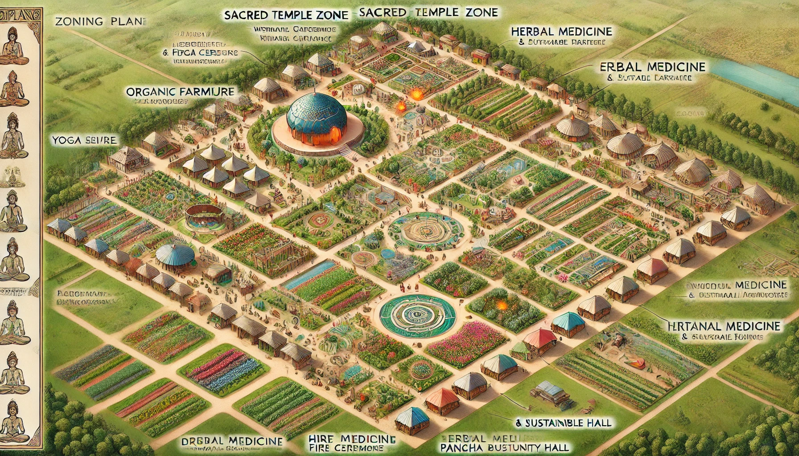

Zoning Plan for the 80-Acre Land
The land will be divided into specific sections to accommodate each module, ensuring a seamless and practical learning experience:
- Food & Nutrition Zone: Dedicated space for cooking workshops, heritage kitchens, and food research labs.
- Nature Education Zone: A meditation garden, barefoot therapy trails, and a sound healing space.
- Organic Farming Zone: Sustainable agriculture plots, permaculture gardens, aquaponics, and beekeeping.
- Herbal Medicine Garden: Medicinal plant cultivation, Ayurvedic remedy preparation spaces.
- Wellness & Yoga Zone: Open-air yoga halls, cleansing therapy stations, and holistic consultation spaces.
- Eco-Tourism & Retreat Zone: Meditation retreat spaces, walking pathways, and biodiversity conservation areas.
